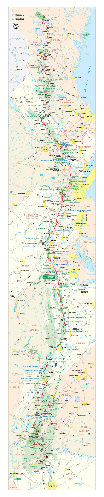

Gravity on the
Appalachian Trail
2,189.8 miles
between Maine and Georgia

Springer Mountain, Georgia
Mt. Katahdin, Maine
- How do you know which way to walk?
- Have you ever seen a bear?
- Speaking of which,
how do you...
well, you know?
- Why do you want to hike 2189.8 miles?
- Thru-hikers never die, they just smell that way.